Dynamics Decomposition
In this tutorial, we explore the dynamics decomposition functionality available in BoolForge’s modularity development branch.
What you will learn
In this tutorial you will:
compute the trajectory of a Boolean network
combine multiple trajectories following the property of equal reachability
Setup
[1]:
import boolforge as bf
Trajectories
A trajectory of a Boolean network is the sequence of states assumed by the network, given an initial state. A trajectory can be thought of as two consecutive components: a transient (non-periodic) prefix followed by the periodic cycle. BoolForge compresses trajectories to a minimal representation, consisting of only the prefix and a single instance of the cycle. Furthermore, all values are stored in decimal representation.
For example, the trajectory
has transient prefix 00 followed by periodic cycle \(\{01, 11, 00, 01\}\). Because these trajectories may belong to non-autonomous Boolean networks, the same state may be repeated multiple times within a cycle. Internally, BoolForge stores the trajectory as ([0, 1, 3, 0, 1], 4). The value 4 indicates that the last four entries \(1, 3, 0, 1\) describe the cycle (in decimal representation). The remaining entries describe the transient prefix. Here, this is just 0 (in decimal
representation), corresponding to the binary state 00.
Computing trajectories
To compute a trajectory, you can call the get_trajectories(...) method for any BooleanNetwork object. This method assumes the network is non-autonomous, and thus requires two parameters defining:
transient_input_sequence
periodic_input_sequence
Both of these parameters are a sequence of sequences of integers. Each sequence of integers defines the states assumed by a specific input node. For example, the sequence (1, 1, 0, 1, 0, 1, 0, 1, …) corresponds to:
transient_input_sequence: [[1]]
periodic_input_sequence: [[1, 0]]
and the sequence (10, 01, 11, 00, 11, 01, 10, 01, 11, 00, 11, 01, 10, …) corresponds to:
transient_input_sequence: [[], []]
periodic_input_sequence: [[1, 0], [0, 1, 1]]
This is because \(x_1\) iterates from the beginning through the 2-cycle (1, 0, 1, 0, 1, 0, …), while \(x_2\) iterates from the beginning through the 3-cycle (0 , 1, 1, 0, 1, 1, …).
As an example, consider a non-autonomous Boolean network with two regulated nodes A and B and an external input C. Assume the external input exhibits the pattern (1, 1, 0, 1, 0, 1, 0, …), i.e., it is 1 and then settles into a 2-cycle:
[2]:
bn = bf.BooleanNetwork.from_string('''
A = B and C
B = A''',
separator='=')
non_periodic = [[1]]
periodic = [[1, 0]]
T = bn.get_trajectories(transient_input_sequence=non_periodic,
periodic_input_sequence=periodic,
merge_trajectories = False)
print("T_00: ", T[0])
print("T_01: ", T[1])
print("T_10: ", T[2])
print("T_11: ", T[3])
T_00: ([0], 1)
T_01: ([1, 2, 1, 0], 1)
T_10: ([2, 1], 2)
T_11: ([3, 3, 3, 1, 2], 2)
Notice that we also pass an additional Boolean parameter. This is because BoolForge automatically attempts to compress the trajectory representation into a reduced, graphical format. When the merge_trajectories flag is passed as True or omitted, get_trajectories(...) instead returns a NetworkX graph.
Plotting trajectories
BoolForge also provides functionality to plot compressed trajectory graphs:
[3]:
G = bn.get_trajectories(non_periodic, periodic)
bf.plot_trajectory(G, show = True);

This process can also be performed manually, by calling compress_trajectories(...) on the list output of get_trajectories(...). However, the compress_trajectories(...) function will require the number of non-input nodes in the network. This value is automatically computed and passed to the function when the merge_trajectories flag is True.
[4]:
trajectories = bn.get_trajectories(transient_input_sequence = non_periodic,
periodic_input_sequence = periodic,
merge_trajectories = False)
G = bf.compress_trajectories(trajectories, 2)
bf.plot_trajectory(G, show = True);
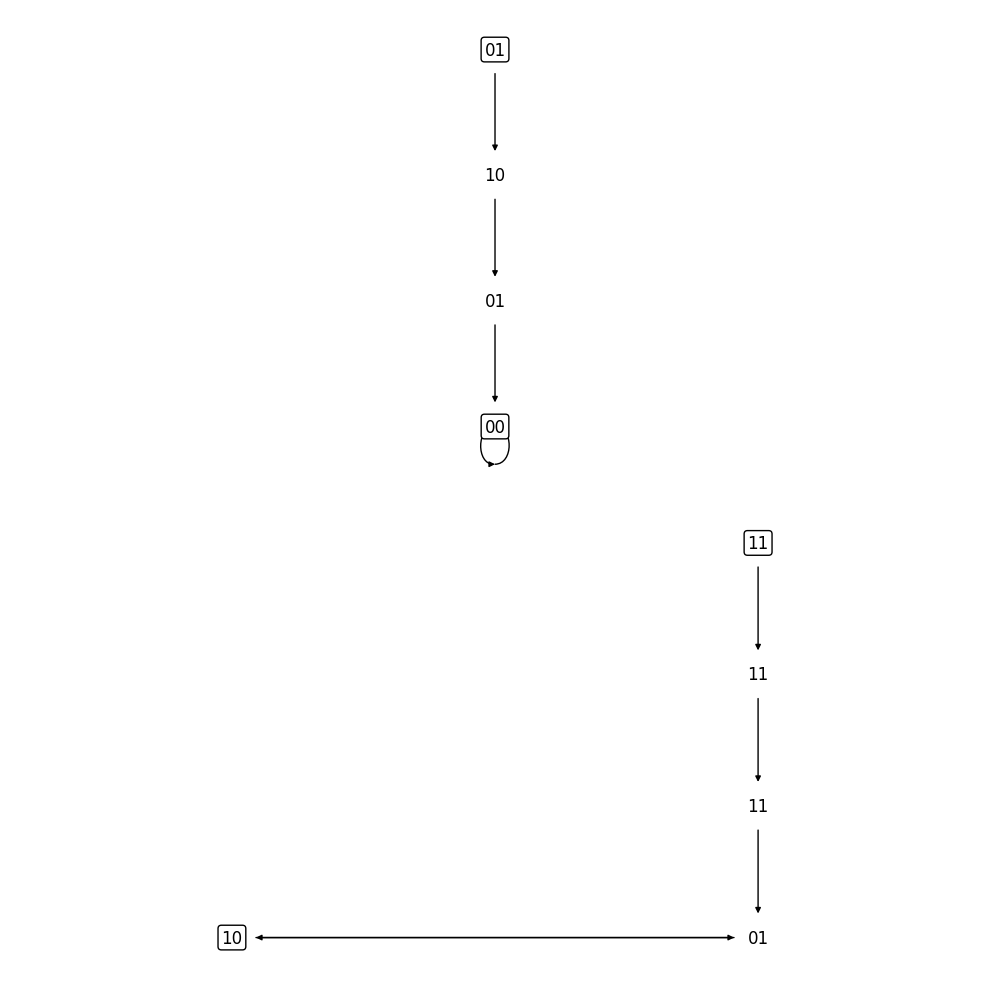
Computing the product of trajectories
Computing the product of two trajectories requires that both trajectories have already been compressed into the reduced, grapical format. Given two compressed trajectory graphs, we can compute the product by calling product_of_trajectories(...).
For example, consider the examples 2.8 and 2.9:
[5]:
n_2_8 = bf.BooleanNetwork([[0,0,0,1], [0,1], [0, 1]], [[1, 2], [0], [2]])
G_2_8 = n_2_8.get_trajectories([[1]], [[1,0]])
n_2_9 = bf.BooleanNetwork([[0,0,0,1], [1,0], [0, 1]], [[1, 2], [0], [2]])
G_2_9 = n_2_9.get_trajectories([[1]], [[1,0]])
G = bf.product_of_trajectories(G_2_8, G_2_9)
bf.plot_trajectory(G_2_8, show = True);
bf.plot_trajectory(G_2_9, show = True);
bf.plot_trajectory(G, show = True);


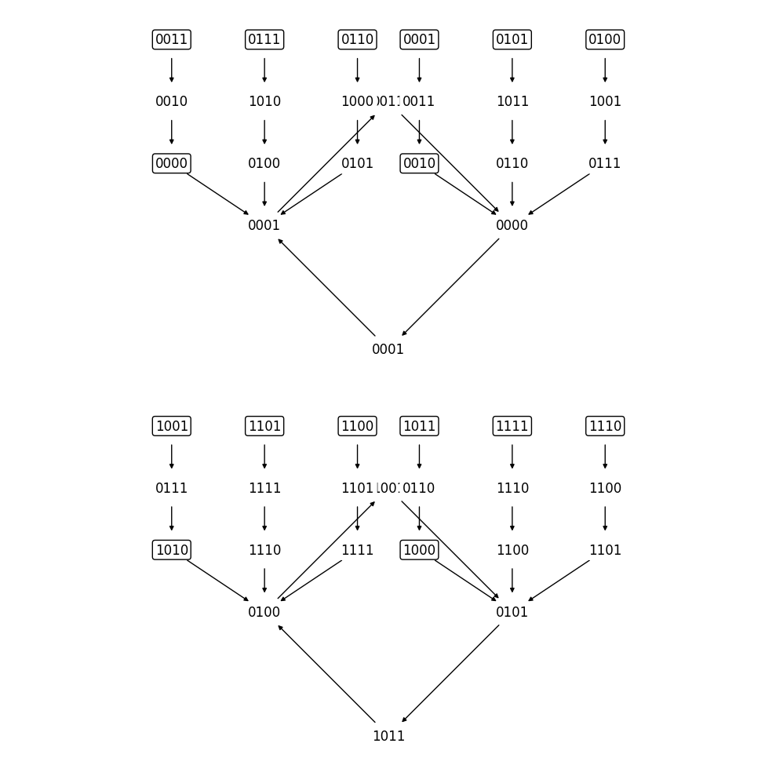
Examples
Everything beyond this point are implementations of all example from the manuscript ``Dynamics Decomposition of Boolean Networks” by Veliz-Cuba et al.
Example 2.8
[6]:
n = bf.BooleanNetwork([[0,0,0,1],[0,1],[0,1]],[[1,2],[0],[2]])
bf.plot_trajectory(n.get_trajectories([[1]],[[1,0]]), show = True);

Example 2.9
[7]:
n = bf.BooleanNetwork([[0,0,0,1],[1,0],[0,1]],[[1,2],[0],[2]])
bf.plot_trajectory(n.get_trajectories([[1]], [[1,0]]), show = True);
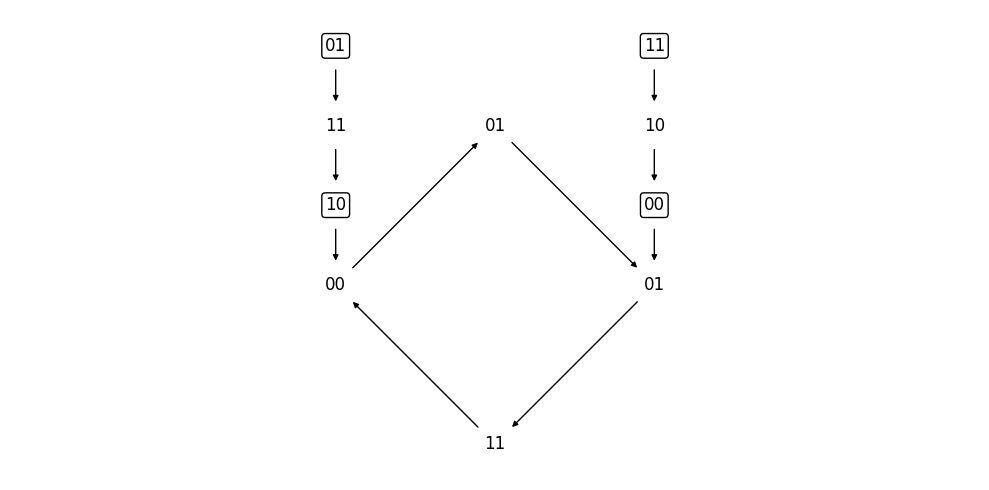
Example 2.10
[8]:
n = bf.BooleanNetwork([[0,0,0,1],[1,0],[0,1]],[[1,2],[0],[2]])
bf.plot_trajectory(n.get_trajectories([[]], [[0]]), show = True);
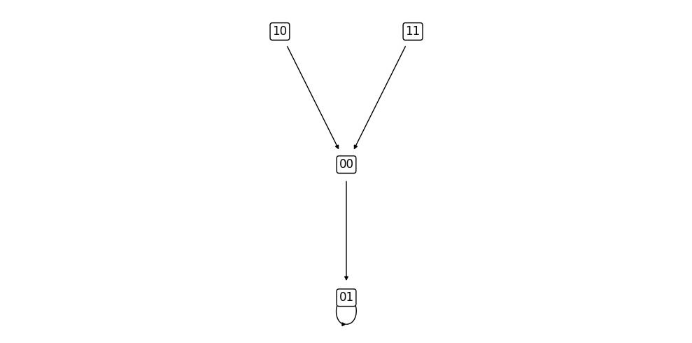
Example 3.2
[9]:
T = [
([1,0],1),
([4,0],1),
([0],1),
([3,5,2],2),
([6,5,2],2),
([2,5],2),
([5,2],2),
([7],1)
]
G = bf.compress_trajectories(T, 3)
bf.plot_trajectory(G, show = True);
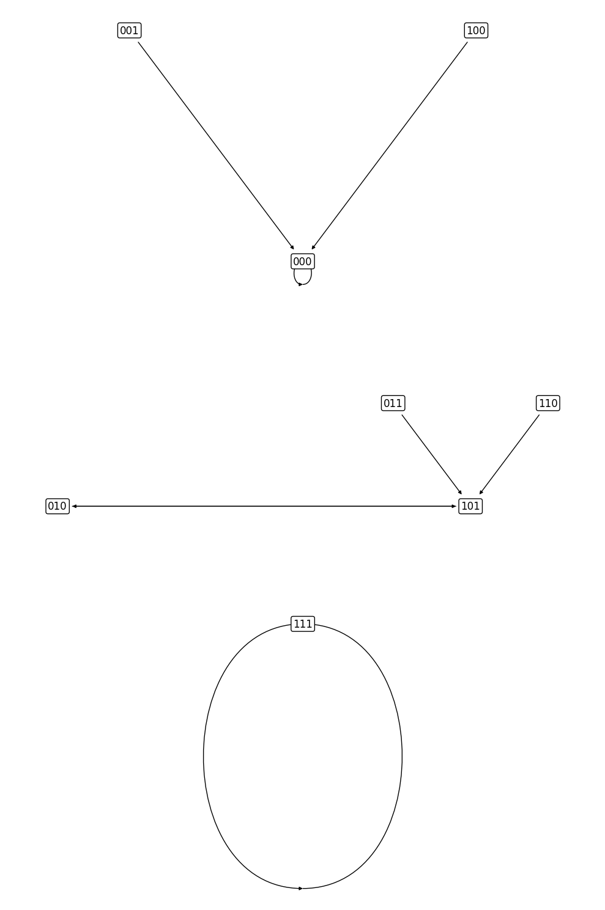
Figure 11
This is Figure 11a from the manuscript.
[10]:
G1 = bf.compress_trajectories([([1,0],1)], 3)
T = [([0,1],1),([1,3,0,1],1),([2,0,1],1),([3,2,0,1],1)]
G2 = bf.compress_trajectories(T, 2)
bf.plot_trajectory(bf.product_of_trajectories(G1, G2), show = True);
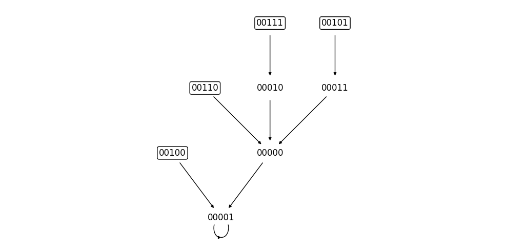
This is Figure 11b from the manuscript.
[11]:
G1 = bf.compress_trajectories([([4,0],1),([0],1)], 3)
T = [([0,1],1),([1],1),([2,0,1],1),([3,0,1],1)]
G2 = bf.compress_trajectories(T, 2)
bf.plot_trajectory(bf.product_of_trajectories(G1, G2), show = True);
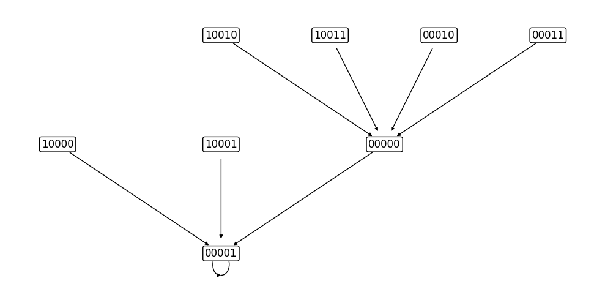
This is Figure 11c from the manuscript.
[12]:
G1 = bf.compress_trajectories([([3,5,2],2)], 3)
T = [
([0,1,3,0,1],4),
([1,3,2,0,1,1,3],4),
([2,0,1,1,3],4),
([3,2,0,1,3,0,1],4)
]
G2 = bf.compress_trajectories(T, 2)
bf.plot_trajectory(bf.product_of_trajectories(G1, G2), show = True);
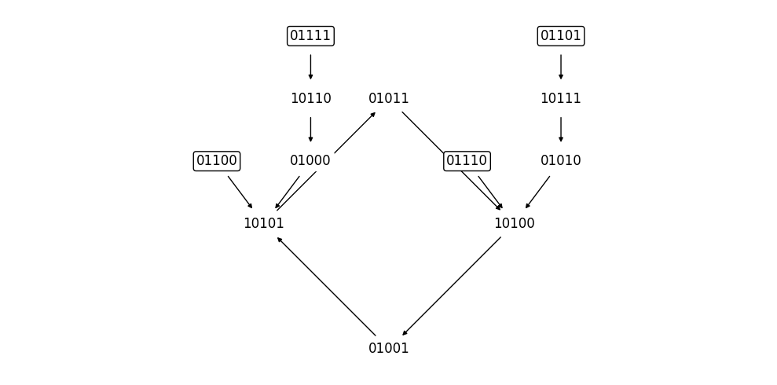
This is Figure 11d from the manuscript.
[13]:
G1 = bf.compress_trajectories([([6,5,2],2),([2,5],2)], 3)
T = [
([0,1,3,0,1],4),
([1,1,3,0],4),
([2,0,1,1,3],4),
([3,0,1,1],4)
]
G2 = bf.compress_trajectories(T, 2)
bf.plot_trajectory(bf.product_of_trajectories(G1, G2), show = True);
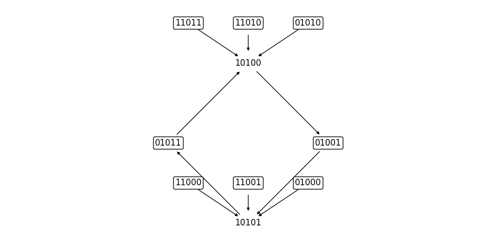
This is Figure 11e from the manuscript.
[14]:
G1 = bf.compress_trajectories([([5,2],2)], 3)
T = [
([0,1,1,3],4),
([1,3,0,1],4),
([2,0,1,3,0,1],4),
([3,2,0,1,1,3],4)
]
G2 = bf.compress_trajectories(T, 2)
bf.plot_trajectory(bf.product_of_trajectories(G1, G2), show = True);
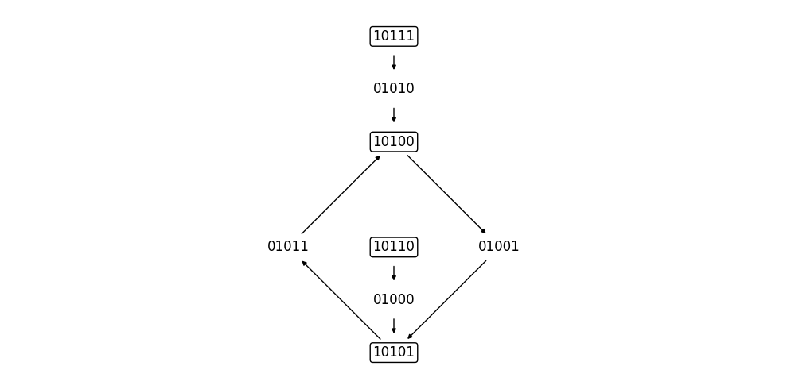
This is Figure 11f from the manuscript.
[15]:
G1 = bf.compress_trajectories([([7],1)], 3)
G2 = bf.compress_trajectories([([0,1,3,2],4),([1,3,2,0],4),([3,2,0,1],4),([2,0,1,3],4)], 2)
bf.plot_trajectory(bf.product_of_trajectories(G1, G2), show = True);
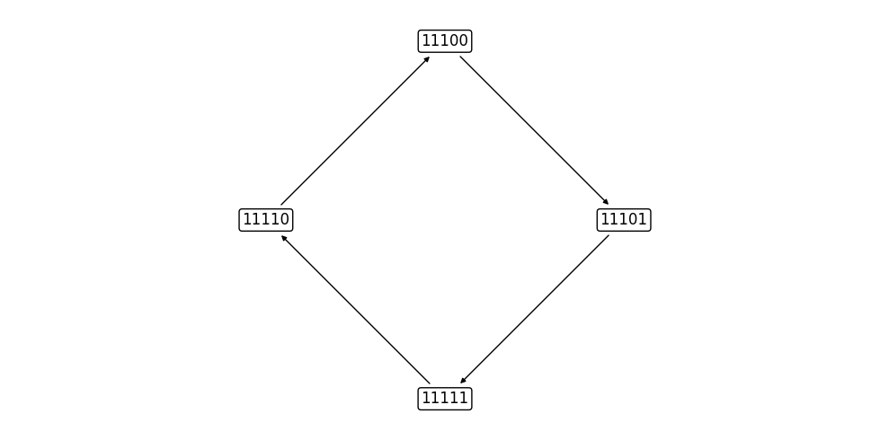